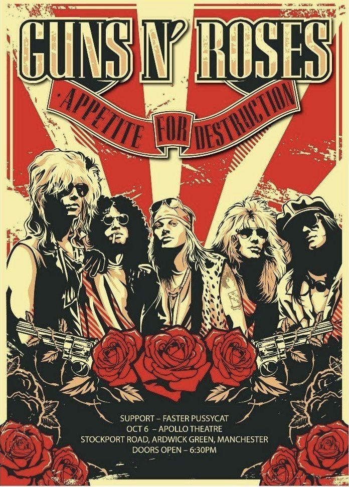

Guns N' Roses é uma banda americana de hard rock formada em Los Angeles, Califórnia, em 1985, resultado da fusão entre as bandas locais L.A. Guns e Hollywood Rose. A formação original do grupo era composta pelo vocalista Axl Rose, o baixista Ole Beich, o baterista Rob Gardner e os guitarristas Tracii Guns e Izzy Stradlin. Meses depois, após assinarem com a Geffen Records, a formação "clássica" do grupo contava com Rose, Stradlin, o guitarrista Slash, o baixista Duff McKagan e o baterista Steven Adler. A formação atual inclui Rose, Slash, McKagan, o guitarrista Richard Fortus, os tecladistas Dizzy Reed e Melissa Reese e o baterista Isaac Carpenter.
Principais membros:


W. Axl Rose nascido William Bruce Rose, Jr.; Lafayette, 6 de fevereiro de 1962 é um cantor, compositor e músico norte-americano. Ficou conhecido como vocalista da banda de hard rock Guns N' Roses, com quem atingiu popularidade, sucesso e reconhecimento no final dos anos 80 e início dos anos 90, antes de desaparecer dos olhos do público durante vários anos. Foi anunciado como vocalista convidado da banda AC/DC enquanto Brian Johnson cuidava da sua saúde. O AC/DC deixou claro que não seria um membro oficial, mas um membro convidado para realizar apenas alguns shows.
Saul Hudson (Londres, 23 de julho de 1965),[1] conhecido pelo seu nome artístico Slash, é um guitarrista anglo-americano mundialmente famoso como integrante da formação clássica da banda Guns N' Roses, com quem alcançou sucesso mundial no final da década de 1980 e início dos anos 90. Em sua carreira posterior, Slash integrou algumas outras bandas, bem sucedidas em sua maioria, e em 2011 iniciou uma carreira solo, em que até agora lançou cinco discos.
Michael Andrew McKagan (Seattle, 5 de fevereiro de 1964), mais conhecido pelo seu nome artístico Duff McKagan é um músico estadunidense. Ele é mais conhecido por ser membro fundador e baixista por quase 30 anos da banda de hard rock Guns N' Roses, com quem alcançou sucesso mundial no final de 1980 e início de 1990 e também que deixou no auge de sua fama em 1997. Durante seus últimos anos com a banda, ele lançou um álbum solo, Believe in Me (1993), e formou por curta duração o supergrupo Neurotic Outsiders.
Richard Fortus (também estilizado como 4tus; St. Louis, 17 de novembro de 1966) é um guitarrista americano. Ele é membro da banda de hard rock Guns N' Roses, com quem gravou um álbum de estúdio desde 2002.[1][2] Fortus também colaborou extensivamente com o vocalista do The Psychedelic Furs, Richard Butler, e seu colega de banda nos Guns N' Roses, Frank Ferrer. Além do vocalista Axl Rose e do tecladista Dizzy Reed, Fortus é o tercei ro membro mais antigo em atividade contínua nos Guns N' Roses, desde 2002, atrás de Dizzy, que está desde 1990 e de Axl, membro-fundador, que está desde 1985.[1]

O grupo foi formado no início de 1985 pelos membros do Hollywood Rose Axl Rose (vocais) e Izzy Stradlin (guitarra rítmica); e membros do L.A. Guns Tracii Guns (guitarra solo), Ole Beich (baixo) e Robbie Gardner (bateria). A nova banda criou o seu nome a partir da combinação de dois nomes dos membros do grupo. Depois de pouco tempo (várias fontes indicam que apenas dois ou três shows foram feitos com os integrantes Guns, Beich & Gardner), o baixista Ole Beich foi substituído por Duff McKagan, enquanto a falta de Tracii Guns nos ensaios levou à sua substituição por Slash.
Slash tinha tocado com McKagan no Road Crew e com Stradlin durante um curto período no Hollywood Rose. A nova formação se reunira rapidamente, mas, pouco antes de embarcar em uma turnê curta de Sacramento, na Califórnia, para Seattle, em Washington, o baterista Rob Gardner saiu e foi substituído por um amigo de Slash, Steven Adler (que também era do Road Crew). A banda, que continuou a ser chamada Guns N' Roses, mesmo depois da partida de Tracii Guns, estabeleceu a sua primeira formação estável até o chamado "Hell Tour".
A estreia nos palcos da nova formação aconteceu em 6 de Junho de 1986, no Troubador, em Hollywood, para cerca de 150 pessoas. Após isso, a banda seguiu para Seattle, onde teve a sua turnê de estreia, conhecida por Hell Tour. No caminho entre Los Angeles e Seattle, a van onde viajavam quebrou, não restando alternativa a não ser abandonar o veículo e pedir carona. Com isso, a banda demorou mais de dois dias para chegar, atrasando seu primeiro compromisso em Seattle e causando, como consequência, o cancelamento da turnê inicial do Guns N' Roses pelos Estados Unidos, fazendo com que os membros da banda tivessem que vender parte do equipamento para voltar para casa.